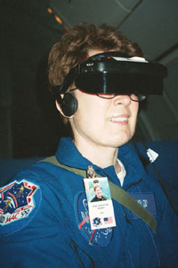
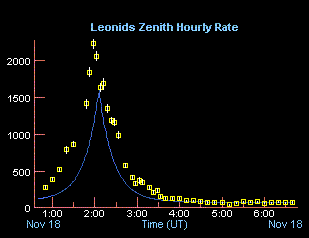
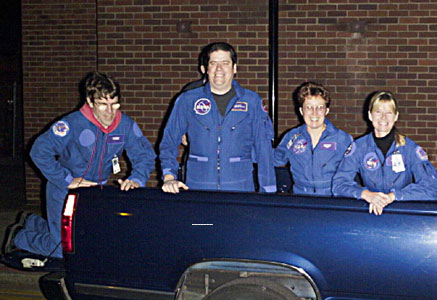

The 1999 Leonid MAC Mission began months before the ARIA aircraft took off from Edwards Air Force Base on Saturday, November 13th. Planning began as soon as the 1998 Mission was over and the predicted storm had not materialized over Okinawa.
My first mission was to get past the gate of NASA Ames Research Center in Mountain View and find
|  |
First, we were briefed by the Air Force, zipped into our new flight suits, and strapped into our seats. Oxygen masks dangled overhead. Off we went on the dream trip of a lifetime. Arizona morphed into the great plains, and then to the great urban eastern coast. After refueling at McGuire AFB in New Jersey, we took off just before midnight for our first official night of meteor flux measurement. It was November 13. Seven hours later, we landed at Mildenhall AFB, near Cambridge in the U.K. On that first night of counting, our numbers averaged an equal number of Leonids and Sporadics about 10 or so each per hour, adjusted for ZHR.
Each of the 6 amateur astronomers on the flux measurement team donned i-goggles which were connected to one of six cameras. Four of the video cameras were equipped with an F/1.2-55 mm photographic objective, a Hi8 camcorder and military image intensifying electronics. Such a camera records stars up to magnitude +8 and
|  |
There were two other cameras aboard the ARIA aircraft, but my team did not use them for our measurements. One of them measured atmospheric wave structure and airglow emission using (among other things) magnesium and sodium filters in visible and near infrared wavelengths. Another was a fiber coupled slit spectrograph - measuring high and low resolution UV. This camera also had a Celestron "First Scope 80" for an objective.
Our first task each evening was to map out the field of view in our goggles. There was some overlap on some of the cameras. It was easy if Orion or Ursa Major was partially visible in the field of view through the goggles. Less easy if three stars in Eridanus were our clues to the field. Once we figured our limiting magnitude by memorizing the star fields in our goggles we were set to observe meteors and record their magnitudes.
Each night yielded highlights. The first night out over the Atlantic we observed meteors streaking through the Aurora Borealis, and saw Sprites, upward lightening strikes, thought to be induced by meteors.
The second night from England to Israel we observed and recorded 15 - 20 Leonids per hour, after making comets at a local elementary school on Lakenheath RAF Base.
The third night from Israel to the Azores we observed the peak of the Leonid Storm of 1999. This equated to a ZHR of 2300 Leonids per hour. I personally observed 2700 Leonids on storm night alone. The group of six of us combined for 15,000 Leonids that night. These counts were subsequently adjusted for ZHR and only the results from similar cameras were used for final results. 453 Leonids at 1:45 UT. 1030 Leonids at 1:50 UT. 1114 Leonids at 1:55 UT. 1017 Leonids at 2:00 UT. 766 Leonids at 2:05 UT. 525 Leonids at 2:10 UT (power outage). 711 Leonids at 2:15 UT. 682 Leonids at 2:20 UT. 577 Leonids at 2:30 UT. Down to 34 Leonids at 4:55.
The fourth night from the Azores to Florida, we observed all night long just to collect the data. We were exhausted and most of us slept some of this night. Sprites and Elves were captured by the airglow measuring camera this night!
The final flight took us from Florida back to Edwards Air Force Base. We all looked out the optical glassed windows in the bright daylight and saw the remnant of an earlier cosmic collision - Arizona's Meteor Crater! What a fitting end to our trip!
My complete scrapbook, complete with more detailed write-ups and many photos, press coverage and research results, as they are submitted can be found at: http://notrump.whiteoaks.com/~mojo/jhmac/
I can't wait for 2002, the next potential year for an airborne trip. I hope I get to go again! Heck I won't even need a flight suit!
|  |